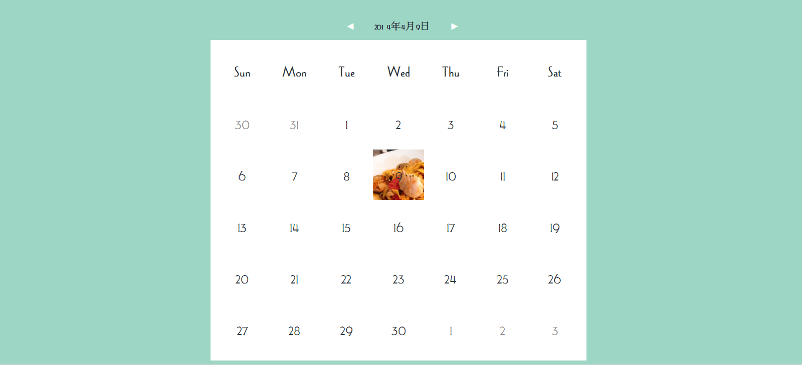
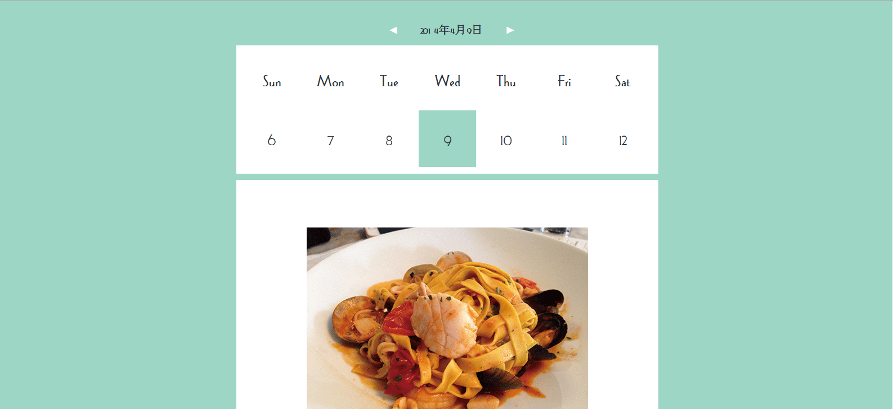
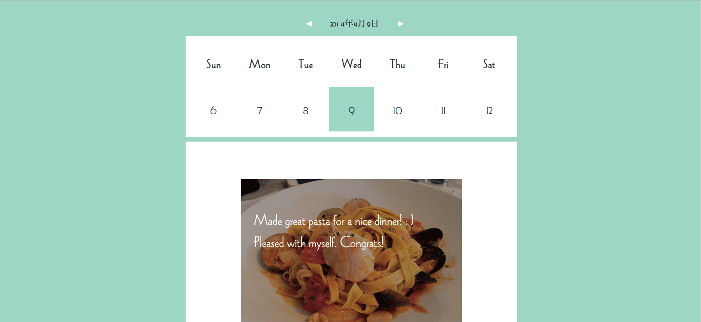

DearDiary
This project is a cross-platform diary app accessible through website or mobile device.
Concept:We live in a crowded world which has been captured by socail networking. We seem to develop a habit to share or like. You share so you exist. So my idea is to create an app to allow users to talk to themselves, to have time to be with themselves, to keep little secrets between themselves, to really enjoy being alone.
User interfaces for the mobile platform
Click here to access the prototype for the website platform.
After users logging in, diary can be seen from the website, it's convenient for users to check their diary. And it's updated automaticly both on mobile and web.


